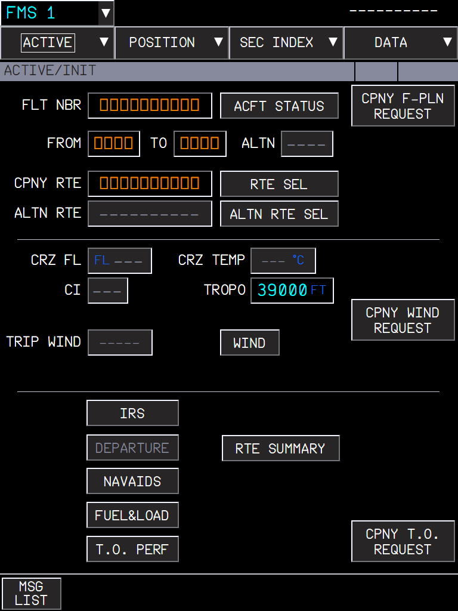
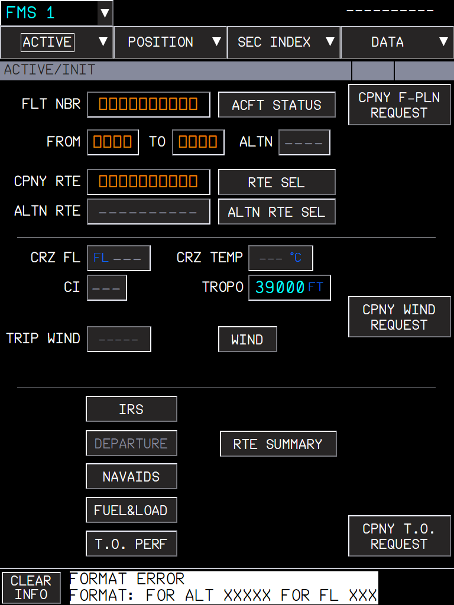
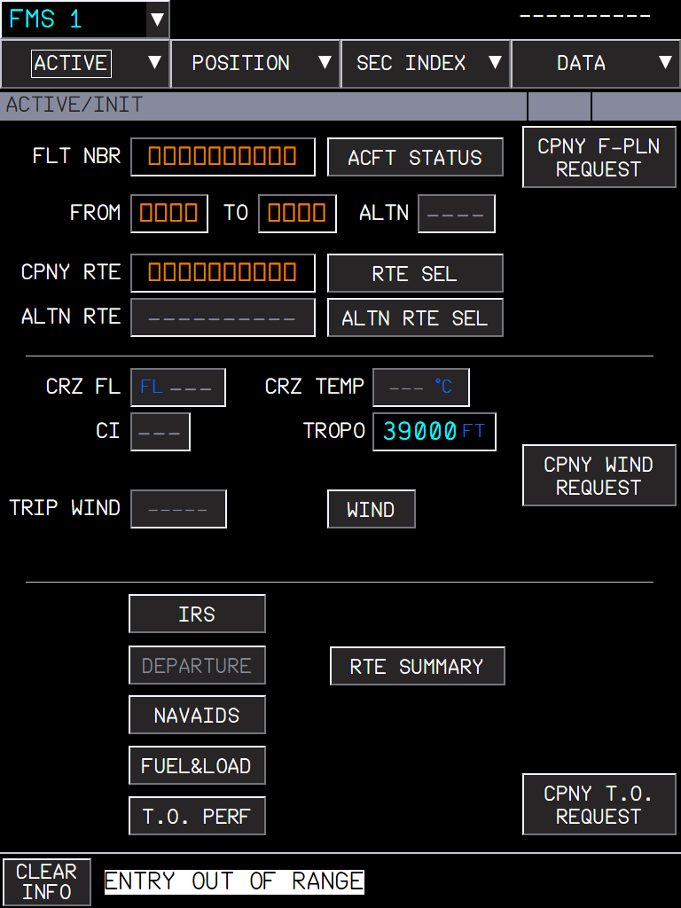

Values typed on the KCCU keyboard are entered with ENT, and ESC cancels the edition, as the FCOM describes the KCCU
AircraftA380X (MFD, OIT, ND OANS panel: every entry field of the displays)Where to find itKCCU (keyboard and cursor control unit) on the pedestal, KBD switch ON; any MFD entry fieldPR branchpr/16-kccu-keyboard-entry (stacked on PR 10)StatusBuilt and used in the sim (September 2026).PicturesCaptain MFD in the local browser harness, running the build installed in the sim; the KCCU keys are sent to the MFD as the sim sends them.
1. What it is for
2. Entering a value
3. Wrong entries
4. Cancelling with ESC
5. What to expect
6. Limitations and why
1. What it is for
On the A380 the crew types on the KCCU keyboard. Before this change a value typed on the 3D KCCU keys was often lost: the field was validated only when the display lost the focus, and clicking a 3D key ends the focus before the key reaches the field. Now the field follows the FCOM (DSC-31-30-20, KCCU):
ENT validates the entry directly.
ESC"cancels the current field edition. The field returns to the last valid value".
With the KBD switch ON, the edition continues whatever happens to the display focus: only ENT, ESC or the selection of another field end it (the previous field is then validated). One field is in edition per side.
A click on a field selects it even when it already had the focus.
KBD switch OFF: the PC keyboard works as before.
2. Entering a value
Set the KBD switch of your KCCU ON.
Click the field with the cursor (trackball or mouse).
Type the value on the KCCU keys (or the PC keyboard).
Press ENT. The value is checked with the FCOM entry format of the field.
Figure 1. TROPO selected, 39000 typed on the KCCU keys.

Figure 2. After ENT: TROPO 39000 FT entered (big cyan: a pilot entry).
3. Wrong entries
ENT on a wrong value leaves the field unchanged and shows the FCOM message in the message area; the message gives the expected format. CLR INFO (KCCU key) clears it.

Figure 3. "ABC" in TROPO: FORMAT ERROR, FORMAT: FOR ALT XXXXX FOR FL XXX.

Figure 4. 99999 in TROPO: ENTRY OUT OF RANGE.
4. Cancelling with ESC
Figure 5. 41000 typed in TROPO, not validated...Figure 6. ... ESC: the field returns to its last valid value, 39000.
5. What to expect
Situation
What you should see
Value typed, ENT
The value is entered (or an FCOM error message).
Value typed, ESC
The field returns to its last valid value.
Value typed, another field clicked
The first value is validated, the new field is in edition.
Value typed, click on a 3D KCCU key or elsewhere in the cockpit
KBD ON: the field stays in edition, the value is not lost.
KBD switch OFF
The PC keyboard types in the field; the field is validated when it loses the focus, as before.
6. Limitations and why
Limitation
Why
What to do
One field in edition per side.
As on the aircraft: each KCCU drives its own side.